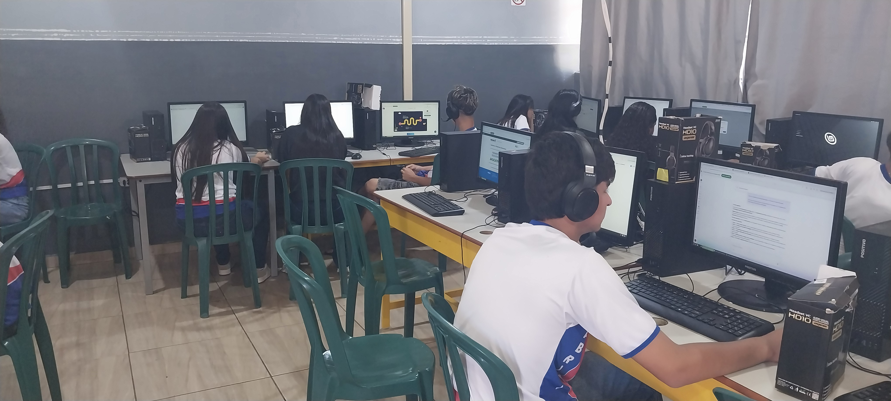

Pesquisa Digital
Desenvolvimento de estratégias para realizar pesquisas na internet, localizar informações confiáveis e analisar diferentes fontes digitais.
A tecnologia como instrumento de aprendizagem, criatividade, pesquisa, programação e construção de conhecimentos no ambiente escolar.

A Educação Digital possibilita aos estudantes desenvolver conhecimentos e habilidades para utilizar as tecnologias de maneira consciente, criativa, crítica e responsável.
No projeto Ciêntificando com IFAS , os recursos digitais foram utilizados como ferramentas para pesquisar, organizar informações, produzir conteúdos, desenvolver páginas web e compartilhar os conhecimentos construídos durante as atividades.
Durante o trimestre, os alunos foram informados sobre o projeto que seria desenvolvido e sobre as etapas que deveriam ser realizadas ao longo do processo. A proposta teve como objetivo promover o uso consciente e criativo das tecnologias digitais, estimulando a pesquisa, a produção de conteúdos e a construção coletiva do conhecimento.
Assim, os alunos da 2ª Série C e D utilizaram ferramentas tecnológicas na busca por compreender como a tecnologia está presente na sociedade e como pode ser utilizada para solucionar problemas, ampliar a comunicação e favorecer a aprendizagem.
Durante o desenvolvimento do projeto, os estudantes tiveram contato com diferentes possibilidades de utilização das tecnologias digitais para pesquisa, produção e divulgação científica.
As atividades envolveram pesquisa na internet, seleção de informações, organização de conteúdos, produção textual, criação de páginas web e utilização de ferramentas digitais.
Dessa maneira, a tecnologia deixou de ser apenas um recurso utilizado em sala de aula e passou a fazer parte do processo de criação dos próprios estudantes.
Desenvolvimento de estratégias para realizar pesquisas na internet, localizar informações confiáveis e analisar diferentes fontes digitais.
Desenvolvimento da capacidade de decompor problemas, identificar padrões, criar estratégias e elaborar soluções.
Reflexão sobre as possibilidades da Inteligência Artificial e seu uso responsável nos processos de aprendizagem e criação.
Desenvolvimento de atitudes responsáveis no uso da internet, das redes sociais e dos diferentes ambientes digitais.
Reflexão sobre o desenvolvimento de tecnologias e recursos que contribuam para ampliar a participação e a inclusão.
Utilização das tecnologias para criar, experimentar, desenvolver projetos e buscar soluções para diferentes problemas.
A programação foi utilizada como uma das ferramentas para transformar as ideias dos estudantes em produtos digitais.
Na construção do site Ciêntificando com IFAS , os estudantes tiveram contato com conceitos básicos de desenvolvimento web e compreenderam como uma página da internet é estruturada, organizada e apresentada ao usuário.
Para isso, foram utilizados três recursos fundamentais no desenvolvimento de páginas web: HTML, CSS e JavaScript . Cada tecnologia possui uma função específica e, quando utilizadas em conjunto, permitem criar páginas organizadas, acessíveis, visualmente atrativas e interativas.
HTML é responsável pela estrutura da página web.
Durante o projeto, foi utilizado para organizar títulos, textos, imagens, links, menus, seções e demais elementos presentes no site.
CSS é responsável pela aparência e organização visual da página.
Foi utilizado para trabalhar cores, fontes, tamanhos, espaçamentos, alinhamento, imagens, cartões, menus e adaptação do site para diferentes tamanhos de tela.
JavaScript permite acrescentar interatividade às páginas web.
A linguagem pode ser utilizada para criar ações, respostas aos comandos do usuário, menus interativos, animações e diferentes recursos que tornam a experiência mais dinâmica.
O desenvolvimento do site possibilitou aos estudantes compreender que a programação não está relacionada apenas à escrita de códigos. Ela também envolve organização de informações, resolução de problemas, criatividade, planejamento e construção de soluções digitais.
Ao criar e organizar as páginas, os estudantes puderam aplicar conhecimentos de pesquisa, produção textual, design, tecnologia e programação em uma produção concreta.

A professora Elaine Lourenço é graduada em Ciências Sociais pela Universidade Estadual de Londrina – UEL, em História pela Universidade Leonardo da Vinci e acadêmica do curso de Licenciatura em Informática.
Possui Pós-Graduação em Libras Português e Educação do Campo pelo Centro Universitário Dom Bosco, além de formação complementar na área de tecnologia e programação.
Entre as formações realizadas na área de tecnologia, destacam-se cursos da plataforma Alura, incluindo formação em Front-end.
No ambiente escolar, desenvolve atividades relacionadas à Educação Digital, Programação, Inteligência Artificial, tecnologias educacionais e projetos interdisciplinares.
No projeto Ciêntificando com IFAS , contribui para o desenvolvimento das atividades relacionadas à Educação Digital e Programação, incentivando os estudantes a aprender por meio da pesquisa, da criação e da experimentação.
A proposta da Educação Digital no projeto é baseada na aprendizagem pela prática. Os estudantes participam das diferentes etapas do processo, desde a pesquisa e organização das informações até a produção e divulgação dos conteúdos.
Ao desenvolver uma página, organizar imagens, escrever textos ou solucionar um problema de programação, o estudante também desenvolve autonomia, criatividade, colaboração e capacidade de resolver problemas.
Assim, a tecnologia passa a ser compreendida como uma ferramenta de criação, investigação e transformação da realidade.